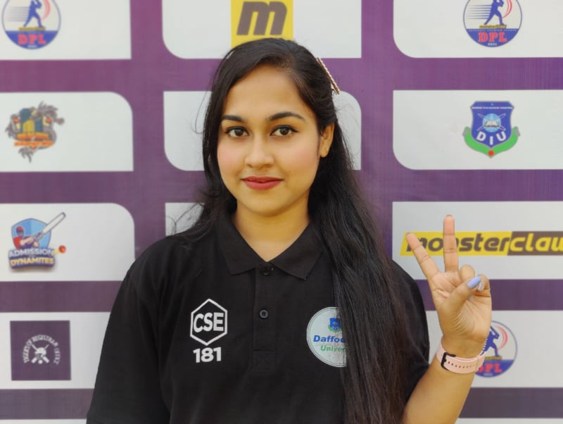

Shampa Deb

career objective:
Motivated and passionate student with the intention of gaining admission into a renowned university.
Hardworking and driven with goals of flourishing in the computer science and engineering area. A quick
learner, self-motivated, responsible, disciplined, and deadline-oriented person who can work under
pressure and solve problems in a critical situation with analytical knowledge and the latest technology.
Education:
bachelor of computer science and engineering at DIU,Bangladesh(2018-2022)
Soft Skills:
- Teamwork and leadership
- adaptability to change
- interpersonal & communication skills
- Strategic thinking & planning abilities
- Time management and project management skills
Technical Skills:
- programming language : Python,c,c++,Java
- Development : HTML,CSS,Javascript
- Data base : MysQL,SQL server
- Algorithm & techniqes : Algorithm & Data structure,machine learning
- IDE experience : upyter notebook, NumPy, Pandas, Seaborn, Anaconda
Navigator, Visual Studio.
- Graphic Design : Adobe Photoshop – Intermediate, Adobe Illustrator – Basic
- PC skills : Microsoft office 365 (MS Word, Excel, Power Point),
Window & Linux OS.
Academic Projects:
- Developed an Android application called ‘Bloodman’ using Java for Blood group searching. Also,
Developed a website using HTML, CSS, and PHP called Hackers Drugs - Online Pharmacy was
integrated to the App.
- Build an application Hospital Management System integration (Database) for emergency
condition that helps healthcare facilities streamline and automate administrative and
operational tasks.
- Applied different machine learning algorithms on weather and crop data and made a model
which is best for Weather Prediction for Crop localization.
Thesis Project:
- Design and implementation of a control system for Impact of Using Electricity for Rural
Warehouse Moisture.
Publication:
- Shamim Ibrahim; Shampa Rani Deb; Md Foyez Ahmed; Fizar Ahmed, “Impact of Using Electricity
for Rural Warehouse Moisture Control System”, 2022 6th International Conference on Computing
Methodologies and Communication (ICCMC), 29-31 March 2022.
- Md. Minhajul Abedin; Md. Nurul Islam; Joy Ray Chowdhury; Shampa Rani Deb; Fizar Ahmed, “A
Data Science and Machine Learning Technique for Crop Localization from Weather Dataset”, 2022
6th International Conference on Computing Methodologies and Communication (ICCMC), 29-31
March 2022.
area of Interest:
- Forecasting and data integration using Machine Learning and Artificial Intelligent (AI) algorithms.
- Big data analysis focusing healthcare and natural resources.
- Android application development for smart warehouse management Integrating OpenAI
assistance.
Extracurricular Activities:
- Assistant General Secretary, January 2019-December, 2020.
- Girls' Computer Programming Club (GCPC), Daffodil International University, Dhaka, Bangladesh.
- Worked With Muktopaath to make awareness of COVID-19.
- Worked as a volunteer of Biddanondo to help underprivileged children.